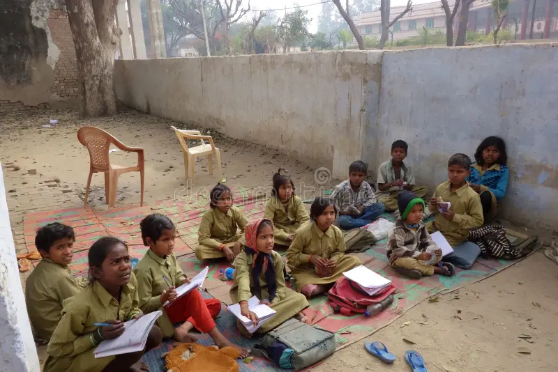

What is the issue?

Education is a basic human right, but millions of children around the world still do not have the same opportunities. Education affects almost every part of a person’s wellbeing — health, safety, job opportunities and their future. When children miss school, it becomes much harder for them to break the cycle of disadvantage.
Why education matters
- Education helps people get better and safer jobs.
- Learning supports good health and safe decision-making.
- Children who stay in school are less likely to experience poverty.
- Education strengthens communities and supports local problem-solving.
Barriers to education
- Distance: some communities live hours from the nearest school.
- Limited resources: few teachers, textbooks or safe buildings.
- Family responsibilities: chores, sibling care or work.
- Cultural differences between home and school life.
- Gender inequality: girls often face extra safety and social barriers.
Case Study: Australia (Aboriginal Communities)

Many Aboriginal and Torres Strait Islander communities, especially remote ones, face unique challenges in accessing education. Even in a wealthy country like Australia, history, culture and location all impact educational outcomes.
Key challenges
- Remote distance — some students live hundreds of kilometres from school.
- Teacher shortages in remote areas.
- Schools that lack cultural safety or language support.
- Overcrowded housing making homework difficult.
- Attendance issues due to travel, family commitments and limited transport.
Programs making a difference
- Clontarf Foundation — mentoring + sport to engage Aboriginal boys.
- Stars Foundation — education support for Indigenous girls.
- AIME Mentoring — university students mentoring high school students.
- School of the Air — online and radio learning for remote communities.
Case Study: India
India has one of the largest school-aged populations in the world. Many students attend school, but millions still face barriers that prevent them from finishing education.
Key challenges
- Poverty forcing students to leave school to work.
- Long travel distances in rural villages.
- Girls expected to handle chores, cooking or childcare.
- Safety concerns on long walks to school.
- Large learning gaps in reading and mathematics.
NGOs making change
- Pratham — learning camps improving literacy for over 5 million children.
- Teach For India — trained graduates teaching in low-income schools.
- Barefoot College — training rural women as educators and solar engineers.
What can young people do?
- Share what you learn with your class or family.
- Run a book or stationery drive for remote schools.
- Fundraise for literacy programs or NGOs like Pratham or AIME.
- Invite a local Elder to share knowledge and stories.
- Create posters or videos explaining why education matters.